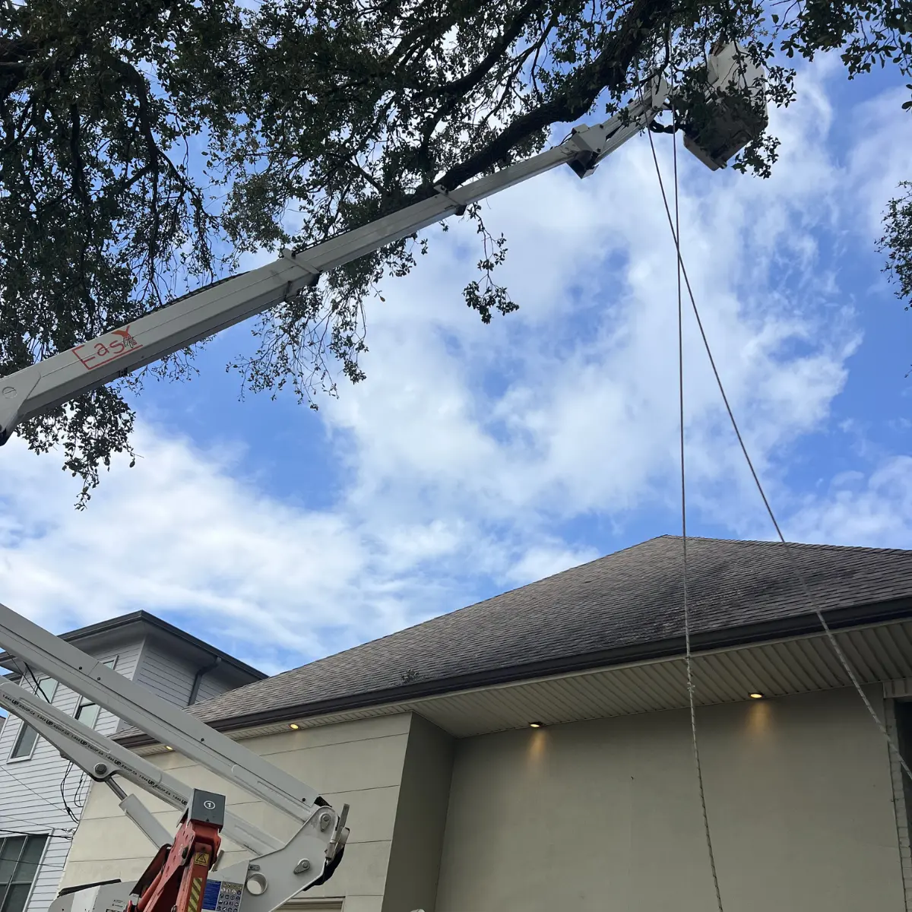

Storm Preparation and Support Systems for Trees in New Orleans, LA
Urgent or unsafe? Call (504) 732-0779


Stump Grinding and Removal Services in Concord & Kannapolis, NC and Surrounding Areas
At A Perfect Cut, we provide storm preparation and tree support system services across New Orleans, Metairie, Kenner, River Ridge, Harahan, and Destrehan. Our work focuses on prevention, safety, and long-term tree stability rather than reactive cleanup after damage has already occurred.
Storm preparation for trees involves professional pruning, structural support systems such as cabling and bracing, and proactive risk reduction to help trees withstand high winds, heavy rain, and saturated soils common in New Orleans.

Pruning Trees for Storm Protection
Pruning is one of the most important preventative measures for protecting your trees from storms and should be done as a regular part of your tree care routine. Proper pruning can help to strengthen branches, reduce weight, and reshape trees into a form that helps it to better withstand strong winds. Depending on the species and condition of your tree, trimming away some parts of it may actually promote better health in the long run.
However, while pruning has its benefits it is still essential not to overdo it. Oftentimes people may take too much off their trees at once and create an imbalance in the tree’s structure. In some cases, this can end up making the tree more vulnerable to storms as opposed to strengthening it.
It also can encourage weak, unsatisfactory growth in some areas, which makes them far more likely to get damaged during heavy weather. When in doubt about how much pruning your tree needs or what kind of pruning you should do, be sure to contact an arborist for professional advice.

Support Systems for Trees
Support systems are one of the most effective ways to protect trees from storm damage. Trees require extra support when they have multiple large branches, if they are growing in windy areas, and if they are young or newly planted. There are a few key support system options that can help protect trees during storms.
Stakes and ties are commonly used for small to medium-sized trees that have some flexibility. Installing two or three stakes around a tree’s trunk provides guidance and stability during strong winds, preventing it from leaning or uprooting. Stakes should be placed at least 6 to 8 inches away from the trunk to allow for growth and prevent bark abrasions.
Cables and braces can be installed in between two limbs of a single tree or between two separate trees. The cables prevent large branches from breaking due to wind and provide additional stability. Cables can also be used as an anchor system that connects a tree’s canopy to an installation in the ground for protection against toppling over.
The use of support systems comes with both advantages and disadvantages that must be weighed before making a decision on how best to protect a tree. On the plus side, these systems enable users to provide instant support without damaging root systems or having to remove parts of the tree’s canopy.
Additionally, their effectiveness can prolong the life of a tree significantly. However, tree support systems need regular inspections and maintenance in order to ensure that they remain intact and continue protecting the trees themselves.

Installing Support Wires
Support wires are a simple and effective way of protecting trees from storm damage, but the most effective solution depends on the age and size of the tree. For mature or large trees, adding several support wires to the branches is often necessary to ensure that they remain stable in strong winds. The wire should be strong and positioned to provide extra strength to weaker branches.
The location of support wires also needs to be carefully considered, as crossing wires may injure a tree’s bark or cause discomfort for wildlife. If possible, it is best to install the wire before a major wind event so that any stress caused by the installation will have time to dissipate before reaching its maximum force.

Setting Up a Lightning Protection System
Setting up a Lightning Protection System is an effective way of protecting trees from storm damage due to lightning strikes. Lightning Protection Systems are designed to intercept and direct lightning away from the tree, and into the ground safely.
This system works by running copper cables within the tree to take the electrical current of a close-by lightning strike away from the tree directly into the ground with grounding rods. The advantage of setting up a lightning protection system is that these systems can keep trees undamaged during storms, thereby saving the expensive costs associated with replanting.

Other Ways to Prepare Trees for Storm Damage
Trees are among the most valuable and important elements of any landscaping. Taking steps to prepare them before storms, as well as supporting them during and after, can keep them healthy and thriving during severe weather. While tree trimming is one of the best ways to reduce storm damage, there are also other proactive measures that can help protect your trees before severe storms arrive.
For starters, trees with particularly sensitive root systems can benefit from a good deep root watering system, even short of weeks-long droughts. Bed renovation near the base of the trunk can also provide extra support, allowing the tree’s roots to critically deepen after storms. The soil should be lightly packed around the roots for extra security.
Adding more mulch around the trunk provides another layer of protection for the root system. Finally, fertilizing as needed throughout each season will ensure your trees get enough nutrients to maintain their health in any weather turbulence.
However, in some cases, it may be hard or ill-advised to take these protective steps. For instance, if your tree has suffered recent damage from a previous storm, adding additional stress might create unhealthy conditions for your tree. In cases like this, it’s best to call a certified arborist who can assess which preventative measures are suitable for each individual tree’s situation.
Providing Shelter
Supplemental plant shelters such as Styrofoam wraps can also protect trees against extreme conditions such as severe frost during winter months or abnormal sun exposure that may lead to dehydration in summer months. These wraps serve as an insulation layer around branches and trunks by retaining heat from sunlight and trapping moisture inside the wrap. They also double as a physical barrier that provides extra support when combined with other techniques such as staking or cabling systems.
Clearing Debris
When large storms hit, debris can litter the ground around trees. Debris like wooden shingles, small branches, and leaves can pile up and impact both the health and safety of tree growth. It’s important to regularly clean up regional debris to ensure trees can properly stand up to potential future storms.
Protecting Against High Wind Damage
High wind damage poses a significant danger to the health and safety of trees. Trees can suffer physical damage from strong winds, uproot, break limbs, or even topple over completely. The age and structural integrity of trees are often what determines their vulnerability to high wind damage. The key factor in protecting trees against these threats is to properly assess the potential vulnerability of trees on your property and to prune them back and strengthen their structure as needed.
On the one hand, some argue that trimming back branches is essential for maintaining the overall health of a tree. Trimming back dead or weak branches helps reduce the likelihood that they will be torn off by wind storms and pose a risk to nearby people and property. On the other hand, trimming can weaken a tree’s structure if carried out too aggressively or without enough expertise. Pruning should be done with caution and knowledge of proper techniques since overly aggressive trimming can decrease a tree’s lifespan by damaging its vascular system and cutting off much needed energy sources from its leaves.
Even with proper pruning, some trees may be susceptible to high wind damage due to their location or because of their species. In such cases, support systems, such as cabling, bracing, bolting and guy wires, can be employed to help increase the stability of weakened branches. Specialty products like stout poles, concrete anchors, and retractable stakes can also be used while taking care not to hamper the growth of roots.
Ongoing Care and Maintenance of Trees
For trees to weather storms successfully, proper ongoing care and maintenance are essential for ensuring trees’ health and resistance to storm damage. Trees that have been properly nurtured will have increased chances of surviving a severe storm, compared to those that are not. Consequently, it is important that tree owners invest in regular pruning, fertilizing, and watering potential problems early on before they become dangerous or life-threatening situations.
Pruning and Trimming
Regular pruning and trimming are important components of maintenance for both aesthetic and safety reasons. Pruning involves cutting off dead branches and thinning out foliage to reduce the risk of storm damage, as well as help maintain an attractive shape. Removal of weak, damaged, or diseased branches can also increase the longevity of the tree. Homeowners should understand their limits when it comes to choosing which branches to cut; professional tree service providers are better suited for more complicated decisions.
Fertilization
During the growing season, trees can benefit from fertilizer applications to replenish soil nutrients. Fertilization will improve overall tree health, making trees more likely to resist winds and snap under extreme weather conditions. A slow-release fertilizer with nitrogen and other minor nutrients is recommended for best results.
Watering
Proper watering is essential for tree sustainability during times of drought or high heat. Not only does water act as nourishment, but it also helps reduce the risk of cracking or splitting of branches due to improperly dry soils. Experts recommend careful evaluation of soil moisture source prior to deciding how often irrigation is necessary; frequent over-watering can be just as detrimental to tree health as overwatering. Once a system is chosen, a commitment must be made to sticking with it despite seasonal changes in precipitation levels.
Some may argue that ongoing care and maintenance take too much time and money; however, research has shown that proactive care can save time down the road in terms of unexpected repairs or treatments for serious issues like decay or pests. Failing to properly care for trees may lead them toward ultimate demise at the hands of a major storm event; therefore a proactive approach pays off in the long run by warding off potentially dangerous impacts upfront.
Service Areas
We provide storm preparation and tree support system services throughout New Orleans, Metairie, Kenner, River Ridge, Harahan, and Destrehan. Our team serves established neighborhoods, including Uptown, the Garden District, Lower Garden District, Audubon, Lakeview, Lake Vista, Irish Channel, the French Quarter, Old Metairie, Elmwood, Harahan, and River Ridge.

Frequently Asked Questions
What are the benefits of implementing a storm preparedness system for trees?
The benefits of installing a tree storm preparedness system are numerous.
- It helps to reduce the risk of tree damage or destruction in the event of a major storm.
- These systems can help to strengthen the roots of weak or damaged trees, allowing them to remain upright during severe weather conditions.
- Using a preparatory system allows homeowners and communities to save money in the long run instead of having to replace lost foliage.
What type of support systems are necessary to properly prepare trees for storms?
To properly prepare trees for storms, a number of support systems should be employed.
- Pruning trees to reduce their weight, decrease the level of deadwood, and remove tight branch crotches and poor branch angles can all help ensure that trees are better equipped to withstand heavy winds and stay standing during storms.
- Staking and guying techniques also can help support and secure trees in windy conditions.
- Adding lightning protection systems should also be considered if your area is prone to lightning strikes.
By implementing these support systems, homeowners and property owners alike can rest easy knowing they have taken the necessary steps to properly protect their valuable trees from damage from hazardous storm events.
Schedule Tree Support Services for Storm Preparation in Greater New Orleans, LA
Our tree support services help stabilize weak limbs and reduce the risk of failure during severe weather. Addressing structural issues before storms arrive lowers the chance of property damage and emergency situations.
Contact A Perfect Cut to get an estimate.
What to Photograph From a Safe Distance
Photos and video show us the tree, the property around it, how we would reach it, and any visible hazards.


Tree down or a limb on a line?
Skip the photos and call. Calls are answered 24/7.
(504) 732-0779Office hours: Monday to Friday 7 AM to 5 PM, Saturday 7 AM to 3 PM, closed Sunday.
Other Tree Care Services

Tree Removal
A Perfect Cut provides safe, efficient tree removal for dead, damaged, or unwanted trees, using advanced equipment and expert techniques to protect your property and landscape.
Get My Arborist Review
Tree Planting
We help you select and plant the right trees for your property, ensuring proper placement and long-term health.
Get My Arborist Review
Consulting & Construction Permitting
We help homeowners and contractors navigate local tree regulations, offering expert advice and handling permits for construction projects involving tree removal or preservation.
Get My Arborist Review
Ready to Show Us Your Tree?
Show us the tree. An arborist reviews what you send. Photos give us a first look. Some trees need an in-person visit before we can make a final recommendation.